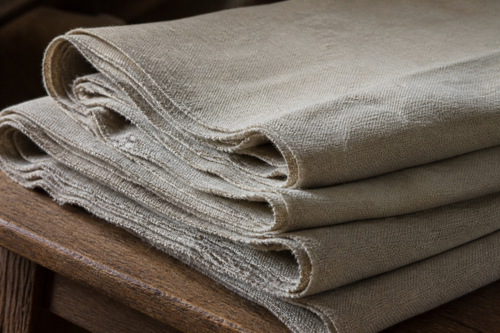

Wedding crossing: people walk in. Red may enter the hall and receive guests. Funeral carrying-out: people lift out. The pole must scrape even less. A funeral crew not yet cleaned should not be let inside as wedding guests.
If the window only opens the red cell, a funeral crew will borrow a name. Borrowing a name is people's work. The old copy only writes opposite. It does not write who borrowed whose name tonight.
Taking this page as a determination of He Lianzou's crew is a jump. Determination needs the book, the SMS, the posts. 40/44
